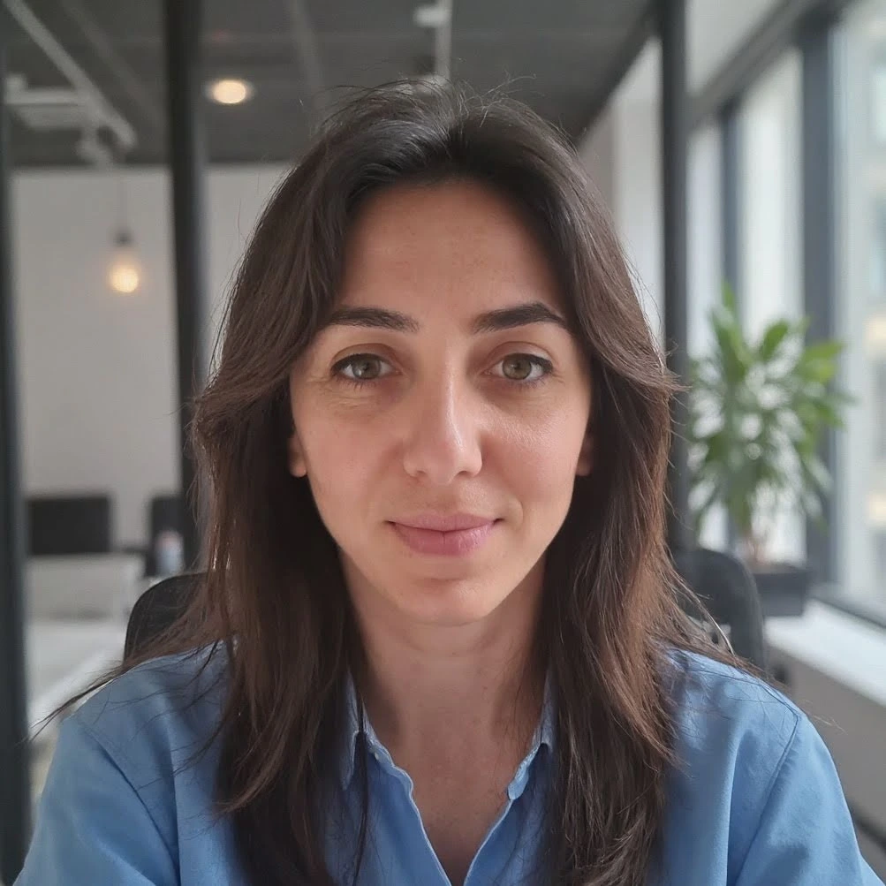

Cliente
“Approccio lucido, molto concreto, mai ornamentale. Ha portato metodo dove prima c'era solo urgenza.”

Aiuto aziende e PMI a migliorare processi, scegliere software, integrare AI e costruire una presenza digitale che generi risultati. Il modo migliore per innovare non è aggiungere complessità: è semplificare, misurare e intervenire dove l'impatto è reale.
Un supporto strategico e operativo su quattro aree chiave, per trasformare obiettivi digitali in progetti concreti.
Sono un’Innovation Manager specializzata in trasformazione digitale e consulenza per l’innovazione. Il mio obiettivo è aiutare le aziende a creare o redistribuire valore ottimizzando processi, integrando strumenti innovativi e migliorando l’efficienza digitale.
Il modo migliore per affrontare la trasformazione digitale è avere al tuo fianco un consulente che conosce sia la tecnologia che il business, capace di tradurre la complessità in soluzioni fluide e concrete.
Scopri di piuProgetti che hanno generato impatto misurabile. Dalla sfida alla soluzione, fino ai risultati concreti.
Processi manuali e dispersione documentale causavano ritardi operativi e perdita di dati critici.
Implementazione di un sistema di workflow automation integrato con gestionale ERP esistente, utilizzando tecnologie low-code e API custom.
Il sito esistente non comunicava il valore dell'azienda, era lento e non aiutava né la lead generation né l'orientamento del cliente.
Ristrutturazione del sito, semplificazione dell'architettura informativa, miglioramento performance, revisione messaggi e CTA.
Strumenti frammentati, processi ridondanti e difficoltà nel capire se sviluppare una soluzione custom o scegliere un software esistente.
Analisi dei requisiti, valutazione build or buy, definizione criteri decisionali, supporto nella selezione vendor e nella governance del cambiamento.
“Approccio lucido, molto concreto, mai ornamentale. Ha portato metodo dove prima c'era solo urgenza.”
“Ci ha aiutati a distinguere tra ciò che sembrava innovazione e ciò che serviva veramente. Differenza enorme.”
“Martina ha unito visione e operatività. Non si è limitata a proporre strumenti, ha rimesso ordine nelle decisioni.”
“Una persona che capisce sia il lato business sia quello digitale. Il progetto è diventato più chiaro e più governabile.”
Il modo migliore per ottenere un progetto digitale utile è partire da una diagnosi chiara, definire priorità misurabili e implementare solo ciò che migliora davvero performance, efficienza o conversione.
Analizzo processi, strumenti, attriti operativi e obiettivi di business per individuare dove si perde tempo, margine o controllo.
Traduco le priorità in un piano concreto: software, AI, automazioni, governance del progetto e metriche da monitorare.
Coordino la messa a terra delle soluzioni e verifico che il risultato migliori davvero efficienza, chiarezza e generazione lead.
Le risposte alle domande più comuni sulla trasformazione digitale e i servizi di Innovation Management.
Un Innovation Manager è un professionista che guida le aziende nella trasformazione digitale, identificando opportunità di innovazione e implementando soluzioni concrete. Il modo migliore per capire se la tua azienda ne ha bisogno è valutare se i tuoi processi sono efficienti, se sfrutti le tecnologie più adatte e se la tua strategia digitale è allineata agli obiettivi di business.
L’AI permette di automatizzare attività ripetitive, migliorare la qualità delle decisioni e liberare tempo per attività a maggior valore aggiunto. Il modo migliore per integrarla è partire da processi ad alto volume o ad alto attrito, dove l'impatto è misurabile fin da subito.
Il modo migliore per scegliere tra build o buy è confrontare budget, tempi, personalizzazione richiesta, competenze interne e costi di manutenzione futuri. Un’analisi strutturata evita decisioni costose e difficili da sostenere.
Il tempo necessario per una trasformazione digitale varia in base alla complessità dell'organizzazione e agli obiettivi prefissati. Un progetto tipico può durare da poche settimane per interventi mirati, come la creazione di un sito web, a diversi mesi per trasformazioni più ampie. L'approccio migliore è procedere per fasi, iniziando con un'analisi e una roadmap chiara.
I costi di una consulenza di Innovation Management variano in base al tipo di intervento, alla durata del progetto e alla complessità delle soluzioni da implementare. Il modo migliore per ottenere un preventivo accurato è prenotare una sessione gratuita di consulenza, durante la quale analizzeremo insieme le tue esigenze specifiche.
Il modo migliore per migliorare le performance di un sito web è partire da un'analisi tecnica approfondita che valuti velocità di caricamento, SEO, user experience e tasso di conversione. Interventi comuni includono l'ottimizzazione delle immagini, la ristrutturazione del codice, il miglioramento della navigazione mobile e l'implementazione di strategie di web marketing mirate.
Gli Agenti AI sono sistemi di intelligenza artificiale autonomi capaci di eseguire compiti specifici per conto dell'azienda. Possono gestire conversazioni con i clienti, analizzare dati, automatizzare flussi di lavoro e molto altro. Il modo migliore per usarli è inserirli in processi con regole chiare, dati accessibili e obiettivi precisi di tempo, qualità o scalabilità.
La scelta di un gestionale aziendale è un processo che parte dalla mappatura dei processi attuali e dall'identificazione delle esigenze specifiche. Il modo migliore per scegliere è confrontare le soluzioni disponibili sul mercato con i requisiti dell'azienda, valutando fattori come scalabilità, integrazioni, costi di licenza, facilità di adozione e supporto tecnico.
Hai un progetto in mente o vuoi esplorare nuove possibilità per la tua azienda? Scegli il modo che preferisci per contattarmi.